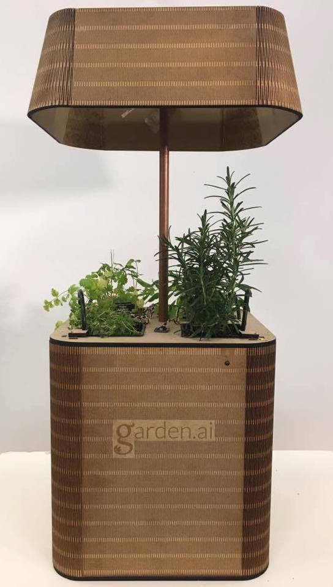
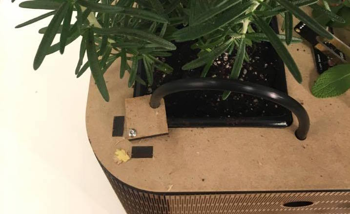

Mechanical System
Mechanical
The mechanical system of Gardenai is designed to both support every other system and house all of it in a very space conscious and visually appealing form.
You can view all of our CAD files here.
Gardenai is compact but efficient. It highlights the variability and adaptability to both the laser cutting process and the MDF material. Mimicking a large end table lamp in size and style, Garden.ai is a ready for use semi-autonomous herb garden that fits in a wide variety of indoor environments.
Structure
Built mostly from laser cut MDF, it consists of a non-structural but aesthetically pleasing wrap around exterior, an interior framing, the irrigation sub-system and finally three acrylic boxes. The interior framing is purely structural: it supports the plants, the boxes and directs the irrigation hoses.
Irrigation
The irrigation system starts with reducing pipe fittings, 1/2 in to 3/16 in, that enable us to connect our bought drip irrigation hoses to the pump. The pump sits in a removable box- this enables the user to easily fill it with water. The thin irrigation hoses then split once, and again, ultimately ending up with four separate drip lines, one for each plant. Before they arrive at the drip nozzle, each one runs through a manually controlled valve - this gives the user precise control of how much water each plant receives. The water then drips out of the nozzles, and should there be any excess not absorbed by the plants, falls onto a collection and funneling plate. This plate has rails that guide the dirty water into another removable box, allowing for the occasional emptying.
Waterproofing
One of the underlying principles of the mechanical design was to keep separate the electricity and water; the piping, boxes, and flow plate all help achieve this. To ensure that this design principle is followed to the tee, we have a final acrylic box that houses all of the electronic components. This sits above the water tanks, in between the plants.
Lights
Finally, rising above the box via a copper tube, our LED’s are placed at an optimal plant growth height and shielded from surrounding eyes with intricately cut MDF.